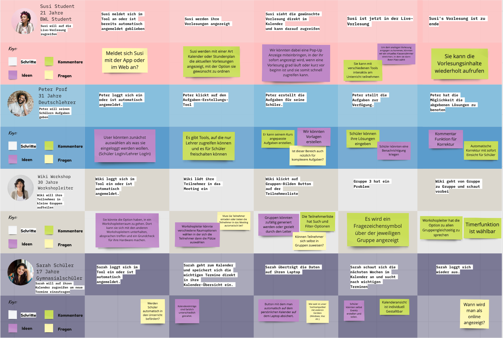
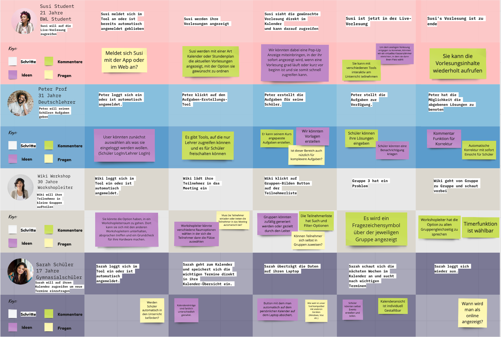
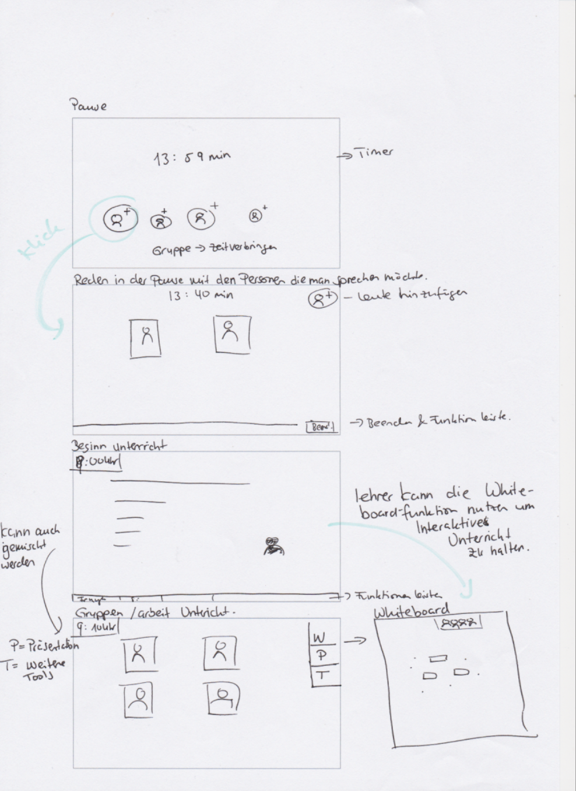
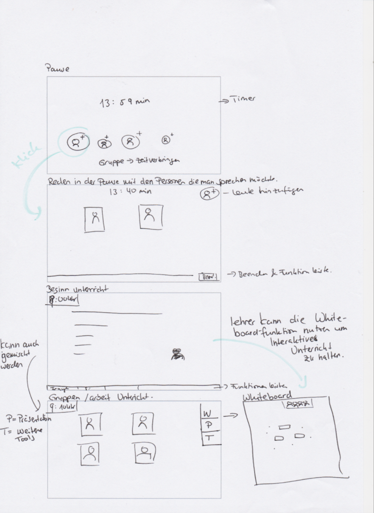

Digitales Lehrplattform
Mit der Kooperation Internet der Dinge - Technologien in der Anwendung, Hochschule Aalen arbeiteten wir in interdisziplinäre Teams zusammen. Wir lernten verschiedene Methoden, Prinzipien und Prozesse kennen. Um Nutzerbedürfnisse und Nutzerverhalten zu erforschen und dafür geeignete Lösungen und Prototypen entwickeln zukönnen. Durch die Zusammenarbeit entstand Educator - Digitales Lehrplattform für Universitäten, Hochschulen, Schulen und Workshops. Als wir durch die Pandemie im März 2020 Online Vorlesungen hatten, kamen wir auf die Idee die Videokonferenzdienste genauer anzusehen und dies ein Redesign mit hilfe der Nutzerbedürfnisse zugeben. Die Funktionen: Gruppen, Applaus, Pause und direkte Datenteilen.Prozess
Wir nutzten für unseren Projekt die Design Thinking Methode. Das Verstehen:
Im erste Schritt wurde eine Stakeholdermap erstellt, da waren die Haupt-Stakeholder: Schulen, Hochschulen & Universitäten.
Im nächsten Schritt führten wir interviews mit Studenten & Studentinnen und ein Auszubildende durch, um die Pain Points herauszufinden.
Das Beobachten:
Wir wollten genau wissen wie der Alltag von unseren Nutzer aussieht, um uns besser hineinversetzen zu können.
Hierzu verglichen wir den Alltag vor der Online Vorlesung & den Alltag mit Online Vorlesung. Einer von den vielen Vorteilen, war z.B.
die Hin- & Zurückfahrt mit dem Zug zur Uni die komplett weggefallen ist. Einer von vielen Nachteilen, war z.B. das treffen mit Freunden & Kommilitonen in der Mittagpause um dies gemeinsam zuverbringen.
Das Verstehen:
Im erste Schritt wurde eine Stakeholdermap erstellt, da waren die Haupt-Stakeholder: Schulen, Hochschulen & Universitäten.
Im nächsten Schritt führten wir interviews mit Studenten & Studentinnen und ein Auszubildende durch, um die Pain Points herauszufinden.
Das Beobachten:
Wir wollten genau wissen wie der Alltag von unseren Nutzer aussieht, um uns besser hineinversetzen zu können.
Hierzu verglichen wir den Alltag vor der Online Vorlesung & den Alltag mit Online Vorlesung. Einer von den vielen Vorteilen, war z.B.
die Hin- & Zurückfahrt mit dem Zug zur Uni die komplett weggefallen ist. Einer von vielen Nachteilen, war z.B. das treffen mit Freunden & Kommilitonen in der Mittagpause um dies gemeinsam zuverbringen.
 Wir machten ein Software Research von verschiede Videokonferenzdienste, um uns die Vorteile und Nachtteile besser zu verstehen.
Genaus so beschäftigten wir uns mit den Fragen - "Was ist die optimale Lehre ?" & wie wird es in Zukunft sein, gerade die
analogen Situation & digitalen Situation - "Was sind die Möglichkeiten?".
Die Ideen Findung:
Durch das Verständnis von den vorherigen Schritten entwickelten wir die Nutzerbedürfnisse herraus.
Wichtige Punkte die wir einbinden wollten waren die Pause-Funktion, Gruppenarbeitansicht, direkt Dateifreigabe, Aufgaben-Funktion & Feedback an Dozent.
Um weiter Ideen zu sammeln wenden wir die Value Proposition Methode an und machten uns gedanken wie ein Virtuelles Klassenzimmer ausehen könnte.
Es wurde auch Anwendeszenarien angewendet, um die bestimmte Anwendungsgruppen besser zu verstehen.

Die ganzen Ideen und Lösungen setzten wir in Wireframes Skizzen um.
Wir machten ein Software Research von verschiede Videokonferenzdienste, um uns die Vorteile und Nachtteile besser zu verstehen.
Genaus so beschäftigten wir uns mit den Fragen - "Was ist die optimale Lehre ?" & wie wird es in Zukunft sein, gerade die
analogen Situation & digitalen Situation - "Was sind die Möglichkeiten?".
Die Ideen Findung:
Durch das Verständnis von den vorherigen Schritten entwickelten wir die Nutzerbedürfnisse herraus.
Wichtige Punkte die wir einbinden wollten waren die Pause-Funktion, Gruppenarbeitansicht, direkt Dateifreigabe, Aufgaben-Funktion & Feedback an Dozent.
Um weiter Ideen zu sammeln wenden wir die Value Proposition Methode an und machten uns gedanken wie ein Virtuelles Klassenzimmer ausehen könnte.
Es wurde auch Anwendeszenarien angewendet, um die bestimmte Anwendungsgruppen besser zu verstehen.

Die ganzen Ideen und Lösungen setzten wir in Wireframes Skizzen um.
 


 Prototypen:
Im weitern Schritt setzten wir die Skizzen in Figma um und prototypten dies auch dort.
Prototypen:
Im weitern Schritt setzten wir die Skizzen in Figma um und prototypten dies auch dort.
 Testen:
In dieser Phase ließen wir uneren Prototypen unseren Nutzer testen, um das Feedback unseren Nutzer wieder in unseren Prototypen
mit einbetten zukönnen.
Testen:
In dieser Phase ließen wir uneren Prototypen unseren Nutzer testen, um das Feedback unseren Nutzer wieder in unseren Prototypen
mit einbetten zukönnen.

Implementieren
Lehrkraft-Ansicht